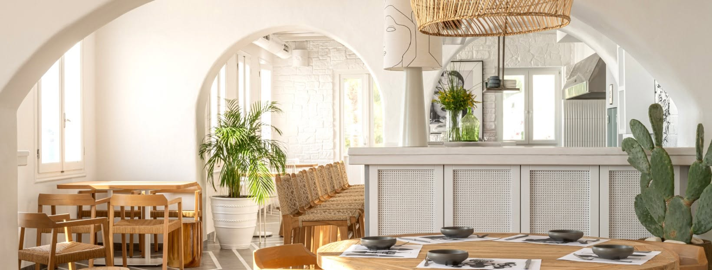
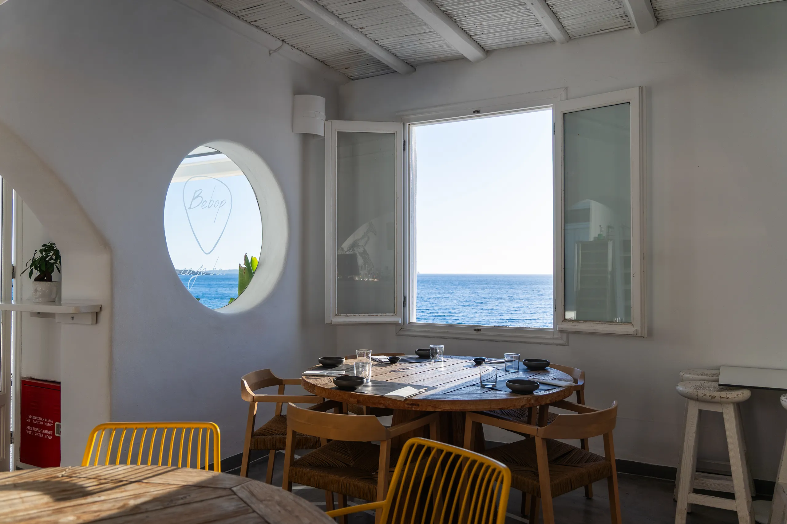
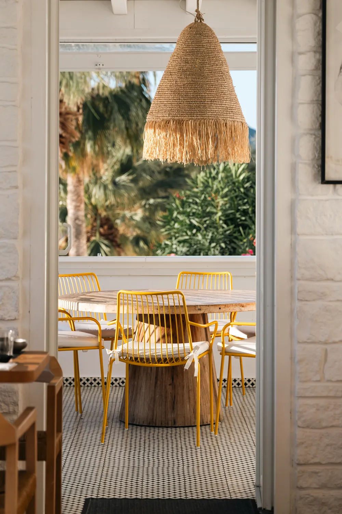
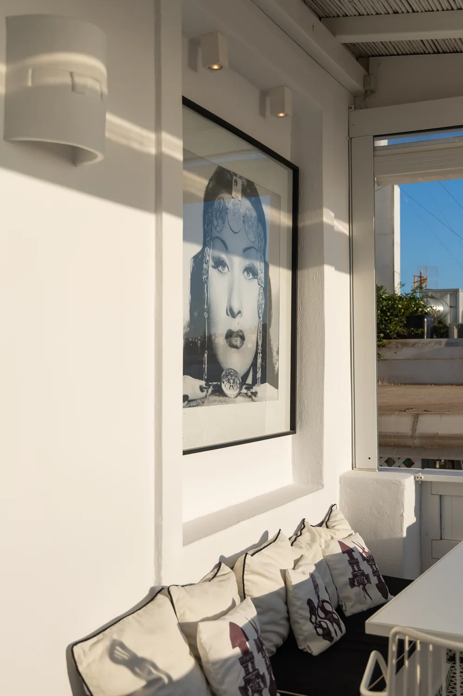
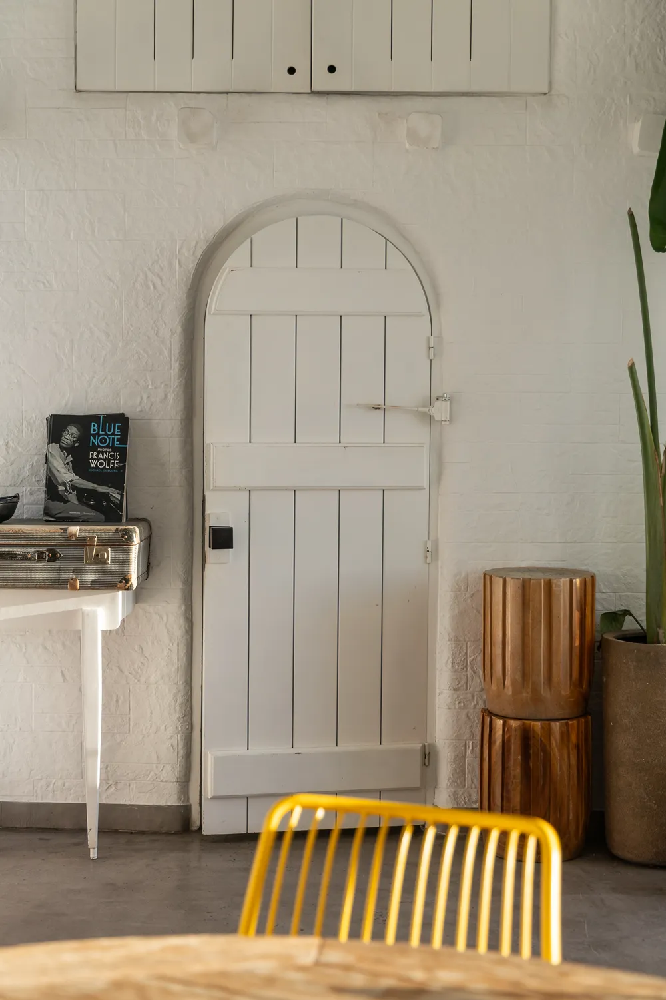
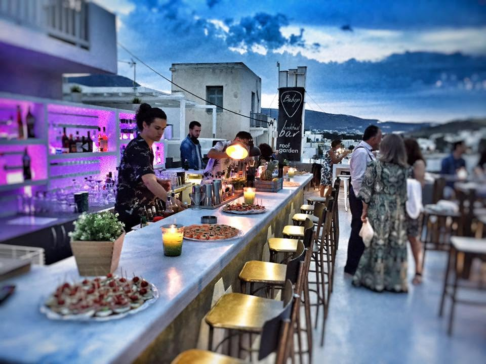

The Place
Cycladic bones. Aegean light.
Located in a classic whitewashed corner of Parikia, our space features traditional island details. We kept the design simple and clean, so you can truly enjoy the Aegean Sea, our sushi, and the music.

Parikia, Paros - the room
Cycladic Architecture
Built in the traditional island style.
Thick white walls that keep the space cool, beautiful arches, and smooth Parian marble floors. The design is simple and minimal, ensuring nothing distracts you from the Aegean sea view or the music playing in the background.
The vocabulary is old — Cycladic, monastic, patient. Every detail is chosen so nothing competes with the light coming off the water, or the record turning in the corner.
Inside the Room
A calm and relaxing space.
The bar is made of smooth white plaster, and the chairs are handwoven right here in Paros. The design is completely minimal—no flashy details or bright colors. Everything is kept simple so the food, the drinks, and the light can be the stars of the show.




Step outside
Golden Hour, every evening
Enjoy cold cocktails and great music as the sun goes down over the Aegean. The sun drops straight into the water in front of the terrace. We time the first plates and the first cocktails to meet it — the busiest, quietest half hour of the day.
